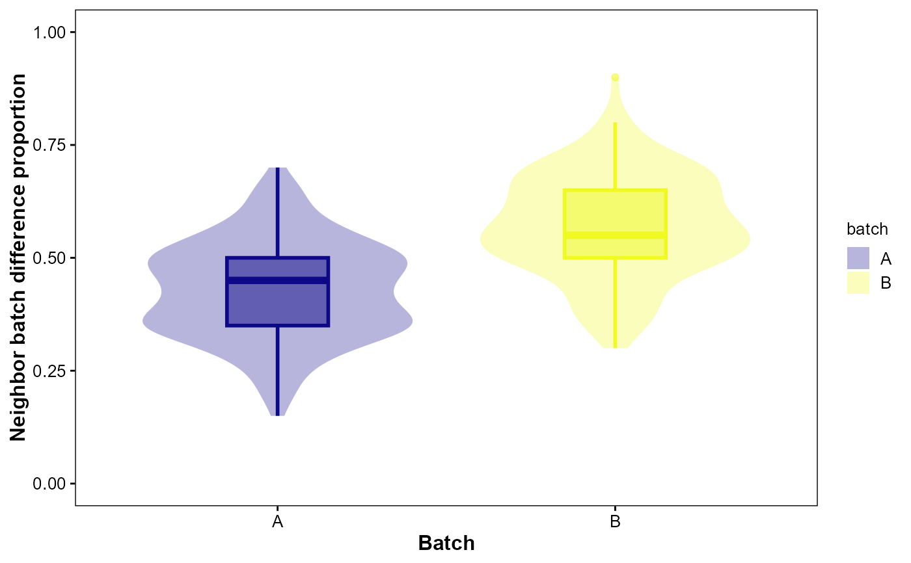

Quantify and visualize batch mixing in a KNN graph before/after integration.
Usage
VisBatchAlign(
object,
batch,
reduction = "pca",
dims = 1:10,
k = 20,
palette = "C",
violin_width = 0.8,
violin_alpha = 0.3,
box_width = 0.3,
box_alpha = 0.5
)Arguments
- object
A
Seuratobject; required.- batch
Column in
object@meta.dataindicating batch; required.- reduction
Reduction for kNN computation,
'pca'or'umap'. Default:'pca'.- dims
Integer vector of dimensions used. Default:
1:10.- k
Number of neighbors. Default:
20.- palette
Viridis palette option for color/fill. Default:
"C".- violin_width
Violin width. Default:
0.8.- violin_alpha
Violin alpha. Default:
0.3.- box_width
Box width. Default:
0.3.- box_alpha
Box alpha. Default:
0.5.
Examples
obj <- SeuratVisProExample(
n_cells = 300,
n_genes = 1000,
n_clusters = 10,
seed = 123,
genes_mt = "^MT-",
neighbor_dims = 10,
cluster_res = 0.5,
umap_dims = 10,
spatial = FALSE)
#> Modularity Optimizer version 1.3.0 by Ludo Waltman and Nees Jan van Eck
#>
#> Number of nodes: 300
#> Number of edges: 4508
#>
#> Running Louvain algorithm...
#> Maximum modularity in 10 random starts: 0.9485
#> Number of communities: 10
#> Elapsed time: 0 seconds
obj$batch <- sample(
c('A','B'),
ncol(obj),
replace = TRUE)
res <- VisBatchAlign(
obj,
batch = 'batch',
reduction = 'pca',
dims = 1:10,
k = 20,
palette = "C",
violin_width = 0.8,
violin_alpha = 0.3,
box_width = 0.3,
box_alpha = 0.5)
res$plot

head(res$summary)
#> # A tibble: 6 × 3
#> cell mix_prop batch
#> <chr> <dbl> <chr>
#> 1 Cell1 0.4 A
#> 2 Cell2 0.75 B
#> 3 Cell3 0.2 A
#> 4 Cell4 0.6 B
#> 5 Cell5 0.5 B
#> 6 Cell6 0.7 B